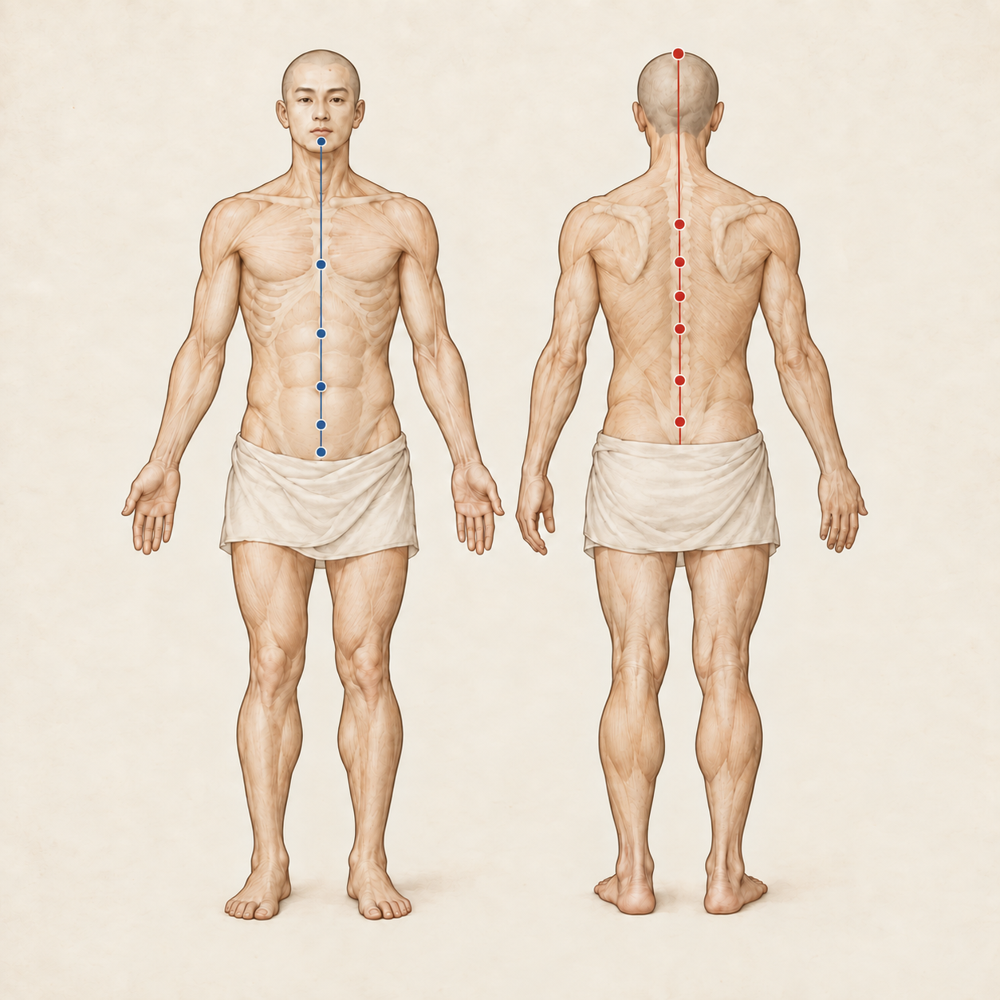
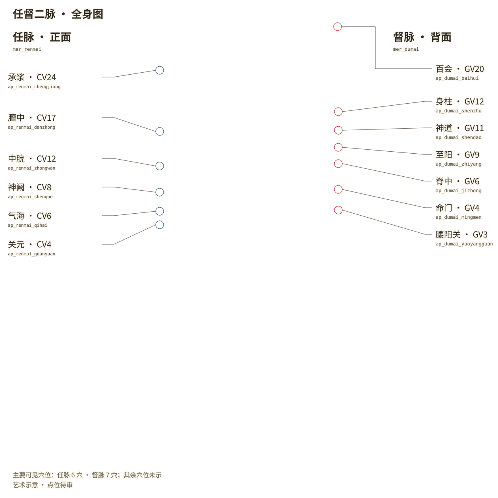
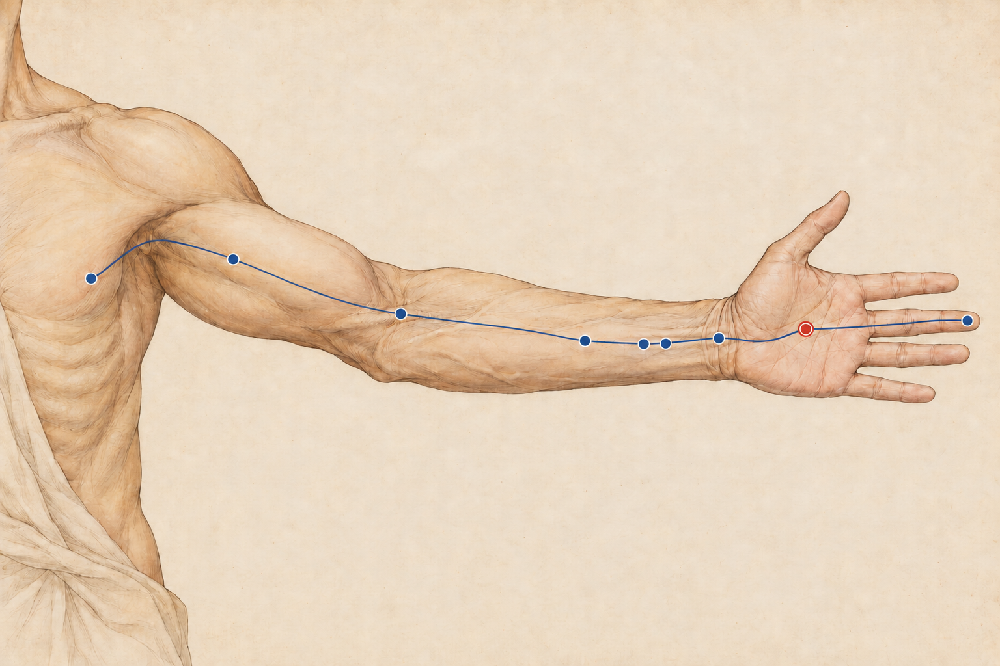
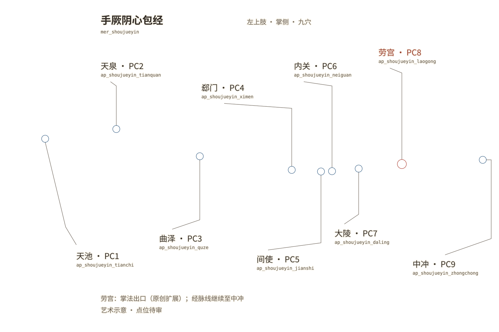

<!doctype html>
<html lang="zh-CN">
<meta charset="utf-8">
<meta name="viewport" content="width=device-width,initial-scale=1">
<title>经脉图 · 基线候选审阅</title>
<style>
  *{box-sizing:border-box}body{margin:0;background:#eee7da;color:#302a25;font-family:system-ui,"PingFang SC",sans-serif}
  header,main{max-width:1600px;margin:auto;padding:24px}h1{font-size:26px;margin:0 0 12px}p{line-height:1.7}
  nav{display:flex;flex-wrap:wrap;gap:24px;align-items:center;margin:18px 0}a{color:#315b82}button{font:inherit;padding:8px 16px;cursor:pointer}
  figure{margin:28px 0 48px}.plate{position:relative;max-width:100%;width:var(--width);box-shadow:0 3px 18px #302a2520}
  .plate img{display:block;width:100%;height:auto}.plate .labels{position:absolute;inset:0;pointer-events:none}
  body.raw .labels{display:none}figcaption{padding:14px 0;line-height:1.7;font-size:15px}.plate:fullscreen{overflow:auto;background:#eee7da}
</style>
<header>
  <h1>经脉图 · 基线候选</h1>
  <p>任督二脉全身图与手厥阴心包经上肢图。当前待作者审批；穴位为艺术示意，精确定位仍待专业审图。</p>
  <nav><a href="#rendu">任督二脉</a><a href="#xinbao">手厥阴心包经</a><button id="toggle" aria-pressed="true">标注：显示</button><a href="manifest.yaml">素材清单</a></nav>
</header>
<main>
  <figure id="rendu">
    <div class="plate" style="--width:1254px">
      
      
    </div>
    <figcaption>任督二脉 · 1254 × 1254 · 主要可见穴位 13 个；未显示的骨盆与正面头部穴位不作移位补画。<br><a href="ref_mer_renmai_dumai__base01.png">原图</a> · <a href="ref_mer_renmai_dumai__base01.labels.svg">透明标注层</a></figcaption>
  </figure>
  <figure id="xinbao">
    <div class="plate" style="--width:1536px">
      
      
    </div>
    <figcaption>手厥阴心包经 · 1536 × 1024 · 九穴；劳宫作为掌法出口属原创扩展，经脉线继续至中冲。<br><a href="ref_mer_shoujueyin__base01.png">原图</a> · <a href="ref_mer_shoujueyin__base01.labels.svg">透明标注层</a></figcaption>
  </figure>
</main>
<script>
  document.getElementById('toggle').addEventListener('click',event=>{
    const hidden=document.body.classList.toggle('raw');
    event.currentTarget.textContent=hidden?'标注：隐藏':'标注：显示';
    event.currentTarget.setAttribute('aria-pressed',String(!hidden));
  });
</script>
</html>
